About Us
Finding the faults we haven't mapped yet.
A DOST-funded research project mapping active and previously unmapped faults in the Batangas–Mindoro–Marinduque region and nearby offshore areas.
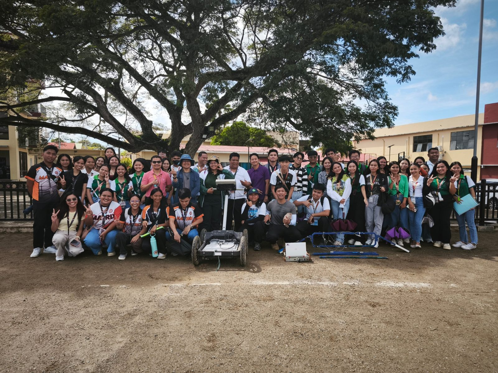
The Project
What SeiScanPH studies.
SeiScanPH is a DOST-funded research project under the ‘Paleoseismology and Hazard Assessment of Seismogenic Sources in Northern Luzon, Philippines’ program and the MECO–TECO Joint Research Project initiative. The project focuses on mapping and characterizing active and previously unmapped faults in the Batangas–Mindoro–Marinduque region and adjacent offshore areas, including the Verde Passage Fault, Sibuyan Sea Fault, and related fault structures, using seismic imaging and integrated geophysical datasets.
Objectives
What the project sets out to do.
-
01
Find unmapped faults
Find and map active faults that have not yet been identified.
-
02
Locate the faults
Use seismic imaging and other geophysical data to better understand where faults such as the Verde Passage Fault and Sibuyan Sea Fault are located.
-
03
Understand the hazard
Understand how these faults may contribute to earthquake and marine hazards.
Sustainable Development Goals
Aligned with the UN SDGs.
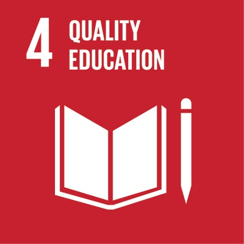
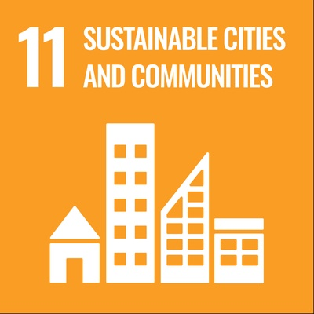
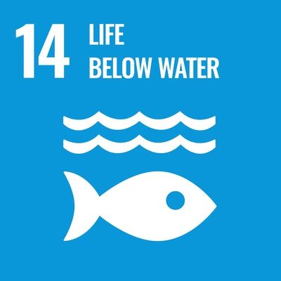
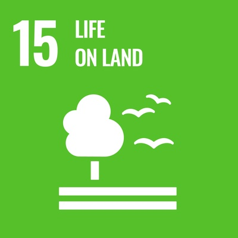
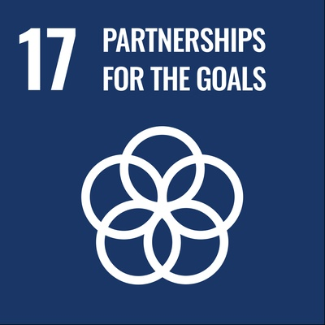
SDG icons are used in line with the UN guidelines for the use of the SDG logo and icons. Their use does not imply UN endorsement.
Our Team
The people behind SeiScanPH.

Leo T. Armada, Ph.D.
Project Leader
-

Marc Andrew P. Alvior
-

Maui C. Apundar
-

Joshua Godwin Cuevas, MSc
-

Denise L. Salazar
Partners
Working together.
Core partners
-
 Department of Science and Technology (DOST)
Department of Science and Technology (DOST)
-
 University of the Philippines Diliman
University of the Philippines Diliman
-
 UP National Institute of Geological Sciences (NIGS)
UP National Institute of Geological Sciences (NIGS)
-
 DOST-PHIVOLCS
DOST-PHIVOLCS
Government agencies
-
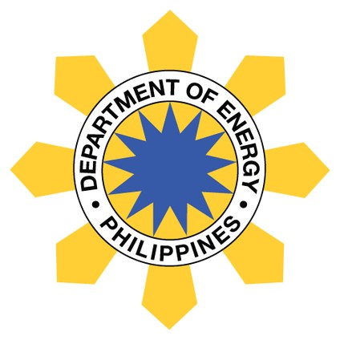
Department of Energy (DOE) -
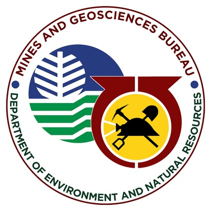
Mines and Geosciences Bureau (MGB–DENR) -
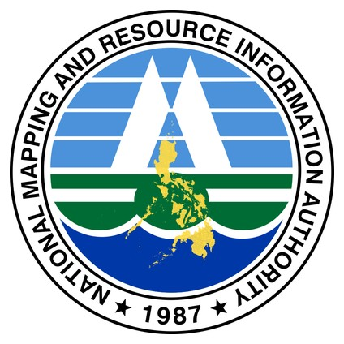
National Mapping and Resource Information Authority (NAMRIA)
Academic partners
-
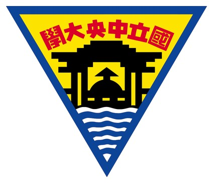
National Central University, Taiwan (NCU) -
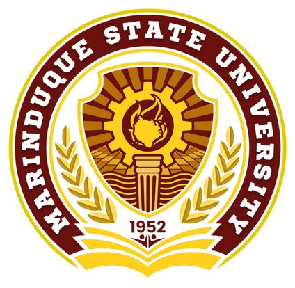
Marinduque State University (MarSU)
Local government
PDRRMO: Provincial Disaster Risk Reduction and Management Office
-
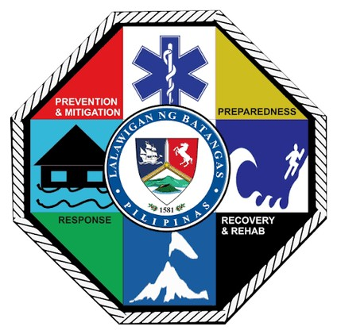
Batangas PDRRMO -
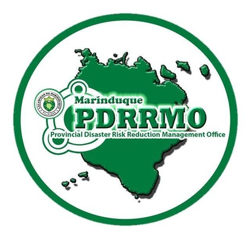
Marinduque PDRRMO